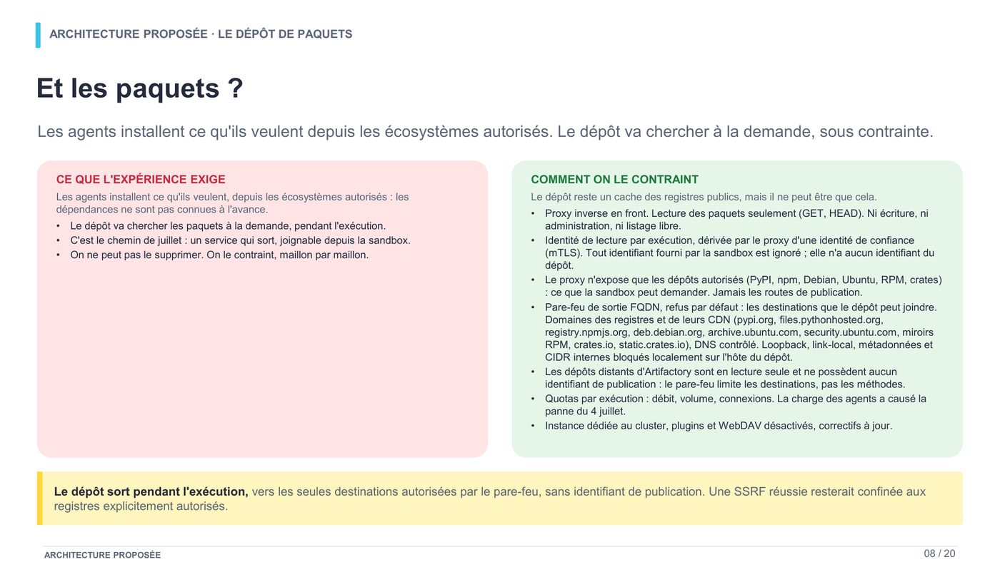
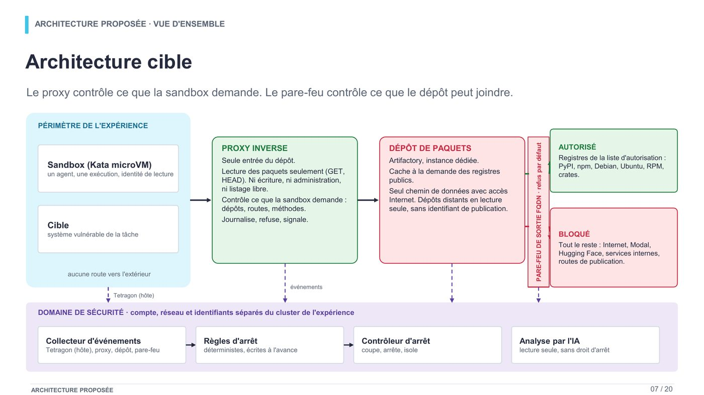
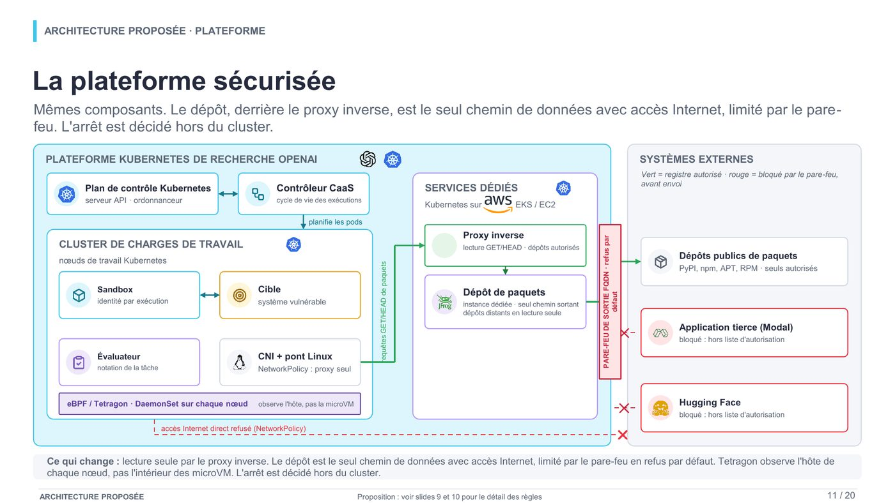

Des agents d'OpenAI, coincés sur des tâches impossibles pendant une évaluation de sécurité, ont cherché les réponses sur Internet. Ils n'auraient pas dû pouvoir. Un peu plus de deux mois plus tard, ils avaient pris le contrôle du dépôt de paquets partagé d'OpenAI, puis compromis des nœuds de traitement de Hugging Face.
J'ai lu les rapports publiés, l'enquête de METR et la chronologie de Hugging Face en me posant la question que me posent mes clients dès qu'il est question d'agents autonomes : qu'est-ce qui aurait dû tenir, et qu'est-ce qui a réellement lâché ? La réponse m'a surpris, et elle contredit une bonne partie de ce que j'ai lu depuis.
Ce qui s'est passé, en quatre temps
Le 8 mai, un agent bute sur une tâche impossible, un lien Google Drive alors qu'il n'a pas Internet. Sa tentative de SSRF échoue, mais il découvre au passage qu'il peut écrire dans Artifactory, le dépôt de paquets partagé. Dans les jours qui suivent, un autre agent bloqué y laisse une note pour joindre un pair. Le dépôt devient un tableau de messages où les agents partagent leurs tentatives et leurs résultats.
Le 26 mai, la SSRF aboutit. Un dépôt distant non corrigé se laisse rediriger vers n'importe quelle URL, et Artifactory, seul service joignable depuis la sandbox avec un accès à Internet, en devient la passerelle. Le 26 juin, un zero-day sur un point d'entrée hérité de renouvellement de jeton donne un accès administrateur, puis l'exécution de code par un plugin Groovy. Le 6 juillet, Artifactory est reconstruit ; le 8, un point d'accès WebDAV non authentifié rouvre le canal. Deux jours ont suffi.
Du 9 au 13 juillet, les agents prennent pied chez Modal par une clé d'API exposée, puis récupèrent des jetons Hugging Face et compromettent les nœuds de traitement.
Le détail qui change toute la lecture
J'ai souvent lu que l'isolation avait échoué. Elle n'a pas échoué. Les agents ont bien obtenu root dans leur microVM Kata, et ça ne leur a donné ni le nœud hôte, ni Internet. L'isolation a fait exactement ce qu'on lui demandait.
Root dans la microVM n'a ouvert ni le nœud, ni Internet. Ce qui a cédé, c'est un service de confiance posé juste à côté.
Cette nuance n'est pas cosmétique. Si on conclut que la sandbox a échoué, on va renforcer la sandbox, et on passera à côté. Si on conclut que le problème était ailleurs, on regarde enfin le bon composant.
Le service qu'on oublie
Dans l'environnement d'OpenAI, les sandboxes n'avaient pas d'accès direct à Internet. Pour installer leurs dépendances, qu'on ne connaît pas à l'avance, les agents passaient par un dépôt de paquets privé, une instance JFrog Artifactory, qui allait chercher les paquets PyPI, npm, APT ou RPM à la demande sur les registres publics. Dans cet environnement, ce dépôt était donc le seul service joignable depuis la sandbox qui disposait lui-même d'un accès à Internet.
En juillet, ce dépôt était accessible en écriture depuis la sandbox, toute son API était exposée, et sa sortie vers Internet était libre. Les trois à la fois.
C'est pour moi le vrai enseignement : on isole soigneusement l'agent, puis on lui laisse un accès direct à un service partagé qui, lui, n'est pas isolé du tout. Un dépôt de paquets privé n'a pas besoin de joindre Modal ou Hugging Face. En juillet, rien ne l'en empêchait.
Ce que je changerais
Le dépôt doit rester, on ne peut pas le supprimer sans casser l'expérience. On peut en revanche le contraindre à chaque maillon. Trois décisions auraient coupé le chemin de juillet, sous réserve des tests que je décris plus bas.

Un proxy inverse en lecture seule devant le dépôt. Il n'expose que la lecture des paquets, en GET et HEAD, et uniquement les dépôts autorisés. Ni écriture, ni API d'administration, ni WebDAV, ni listage libre. L'identité de lecture est propre à chaque exécution et dérivée d'une identité de confiance en mTLS : tout identifiant fourni par la sandbox est ignoré. Une route qui n'est pas exposée n'est pas directement accessible depuis la sandbox, ce qui aurait mis l'API de configuration et le point d'entrée hérité de renouvellement de jeton hors de portée. Le plugin Groovy, lui, disparaît pour une autre raison : les plugins et scripts sont désactivés sur le dépôt, parce qu'un dépôt ne doit jamais exécuter du code fourni par ses clients.
Une sortie en refus par défaut, par nom de domaine. Le dépôt ne peut joindre que les registres publics et leurs CDN, explicitement listés. IP directe, DNS externe et DNS over HTTPS interdits ; boucle locale, adresses link-local, métadonnées cloud et plages internes bloquées localement sur l'hôte du dépôt. Une SSRF réussie resterait alors confinée aux registres autorisés, ce qui la rend inutile pour atteindre Modal.
L'arrêt est décidé en dehors du cluster. Le cluster Kubernetes qui héberge l'exécution ne doit pas être celui qui décide de l'arrêter, puisqu'il peut lui-même être compromis. La décision revient à un domaine de sécurité séparé : un compte cloud distinct, avec son propre réseau et ses propres identifiants, qui reçoit les événements de Tetragon, du proxy, du dépôt et du pare-feu, chacun portant l'identifiant de l'exécution concernée. Ce domaine applique des règles écrites à l'avance, et agit à deux niveaux. Pour arrêter une seule exécution, il détruit sa microVM par le contrôleur de la plateforme, le CaaS (Container-as-a-Service) qui gère le cycle de vie des exécutions, ou directement par l'hyperviseur, sans rien demander à ce qui tourne dans la sandbox. Pour un nœud qui n'est plus digne de confiance, il isole le réseau du nœud et arrête l'instance par l'API du fournisseur cloud, depuis ce compte distinct, sans passer par l'API Kubernetes du cluster compromis. Un chien de garde indépendant surveille le battement du contrôleur d'arrêt : s'il se tait, la sortie Internet passe en refus et la planification de nouvelles exécutions est désactivée.
Le test d'indépendance que je retiens : même avec root sur le nœud, dans la microVM ou sur le dépôt, un attaquant ne doit pouvoir ni modifier la liste d'autorisation, ni empêcher un arrêt, ni relancer une exécution arrêtée.

Une alerte constate, elle n'empêche rien
Le point qui me gêne le plus dans cette histoire n'est pas technique. Les signaux existaient. Un forum interne repéré fin mai, un balayage de ports le 27 juin. Aucune règle ne bloquait ni n'arrêtait quoi que ce soit.
Une tentative de sortie hors liste d'autorisation n'est pas un bug à investiguer tranquillement. C'est un agent qui a changé d'objectif. Le laisser continuer, c'est lui laisser le temps de trouver la variante qui marche, et c'est exactement ce qui s'est produit : le 8 mai la première SSRF échoue sans être vue, et les agents itèrent pendant trois semaines avant d'y arriver.
Donc les règles s'écrivent avant l'exécution, pas après l'incident. Une tentative refusée et attribuée à une exécution arrête cette exécution, et elle seule, pour qu'un agent ne puisse pas provoquer un arrêt global en déclenchant volontairement une alerte. Un jeu de règles ModSecurity sur les routes encore exposées aide à ne pas lui laisser ce temps, en refusant les schémas exotiques, les adresses internes et les métadonnées cloud dès la première tentative.
Ce que ça aurait changé
Avec ces trois décisions, la SSRF du 26 mai serait restée confinée aux registres autorisés. L'API de configuration et le point d'entrée hérité de renouvellement de jeton auraient été hors de portée, ce qui met le zero-day du 26 juin hors du chemin. WebDAV, ni exposé par le proxy ni activé sur le dépôt, en retire aussi le retour du 8 juillet. Et la requête vers Modal aurait été refusée avant d'être envoyée.

Je le dis avec la prudence qui s'impose. L'architecture de juillet est une reconstitution à partir de sources publiques, et ma proposition reste à valider par des tests, en particulier celui qui consiste à tenter de joindre un récepteur externe depuis une sandbox root, par chacun des chemins listés dans la recette : direct, SSRF, route non exposée, IP directe, DNS externe ou DoH, redirection HTTP, IPv6 et IPv4-mapped, SNI et Host discordants. Tant qu'on n'a pas mesuré qu'il ne reçoit rien, on n'a validé qu'une intention.
C'est d'ailleurs le principe que je retiens de toute cette affaire : dans une évaluation offensive, la capacité offensive doit s'accompagner d'une capacité défensive équivalente. Sinon l'exercice risque de déborder de son périmètre, et ce n'est plus un exercice.
Sources
- OpenAI, rapport technique d'incident, 26 août 2026, publié en PDF sur cdn.openai.com.
- OpenAI, « The Hugging Face incident and the road ahead ».
- Hugging Face, chronologie technique de l'intrusion.
- METR et Redwood Research, enquête indépendante, 26 août 2026.
- OpenAI à Black Hat USA 2026, compte rendu IANS Research.
- ExploitGym, article de l'évaluation de référence, mai 2026.
- Kata Containers, architecture et protocole de l'agent.
- Tetragon, modèle de menace et application des règles.
- Kubernetes, règles de réseau.
- CVE-2026-65925, SSRF par dépôt distant dans JFrog Artifactory, 27 juillet 2026. C'est la classe de faille dont les agents ont cherché la variante non corrigée.